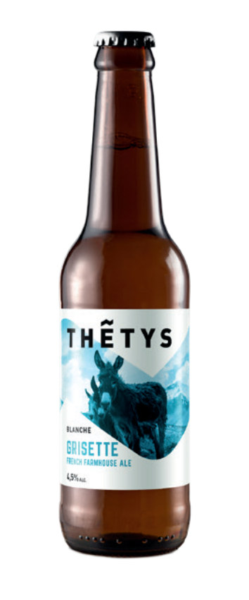
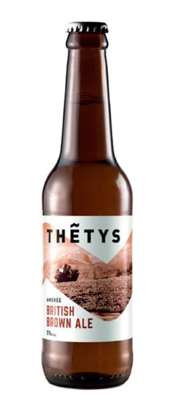
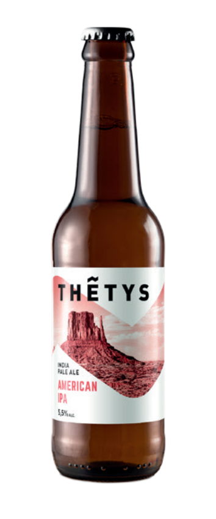
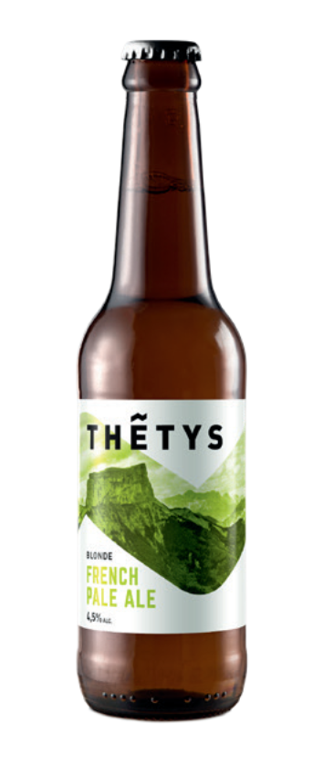

Golden ale

Bière blonde d'inspiration anglaise
Cette blonde à la robe dorée s’ouvre sur un nez d’abricots confits.
En bouche, son amertume modérée est complémentée par des notes de
céréales qui lui offrent un corps sec et désaltérant.
Sa
finale florale aux notes d’aiguilles de pin vous transportera tout
droit dans les vertes collines du Lake District.
Grisette French farmhouse ale
Bière blanche fermière
La grisette tient ses origines des bières fermières wallonnes.
Sa robe pale, presque blanche s’ouvre sur un nez discret de
bananes, d’épices et de levures.
En bouche, l’amertume légère laisse place à un corps tout aussi
doux.
La finale florale et poivrée donne à la grisette un caractère fin et
désaltérant.
British Brown ale
BIÈRE AMBREE D’INSPIRATION BRITANIQUE
Encore une bière qui prend ses origines outre-Manche.
Sa robe
ambrée s’ouvre sur un nez de céréales et de pain grillé.
D’amertume modérée, la bouche fait la part belle aux céréales
torréfiées qui confèrent à cette bière un gout de biscuit et de malt
qui persiste jusqu’à la finale.
Un vrai voyage dans les plaines brumeuses du Yorkshire.
American IPA
BIÈRE BLONDE D’INSPIRATION AMERICAINE
Recette américaine par excellence, cette blonde est chargée en
houblon aromatique.
Ces houblons lui confèrent un nez sucré et
des arômes puissants de pamplemousse rose.
De corps sec, son
amertume vive est construite autour de saveurs d’agrumes, de mangue
et de litchi ; Saveur fruitée persistante qui vous accompagneront
tout au long de la dégustation.
French pale ale
BIÈRE BLONDE D’ORIGINE FRANCAISE
Notre bière de mousquetaires !
Cette blonde fait la part belle
à l’Aramis, une variété de houblon élaborée et cultivée en Alsace.
Ce houblon aromatique confère à cette bière des arômes floraux et
une amertume douce, rappelant les agrumes du sud de la France.
Modérément sèches, ces saveurs d’agrume épicées persistent en
bouche, jusqu’à la finale.